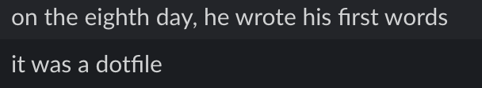

I’m an Engineering Science student at the University of Toronto, majoring in Electrical and Computer Engineering. My primary interests are in robotics, distributed systems, machine learning, and performance engineering. In short, I like to build things that 1) work, 2) work well, and 3) work well together.
What am I up to right now?
- Incoming @ Tesla Autopilot
- Building kortex
- Research @ TISL, co-supervised by NVIDIA research
- Trying to graduate :)
Some things I’ve worked on in the past:
- ProdEng @ Uber
- Autopilot @ Tesla
- ROS & NASA VIPER lunar rover @ Open Robotics (Now an Alphabet company)
- Accelerating machine learning on memristor crossbars @ ISML
- Autonomous vehicles @ aUToronto
Connect with me:
- Email:
brianchen.chen (at) mail.utoronto.ca - Github: github.com/ihasdapie
- Google Scholar: scholar.google.com
Other
Other
- Fun fact: I have an Erdős number of 4. Not particularly impressive, but I think it’s cool.
Q: How can you tell if someone uses Linux?
A: They’ll tell you.
I’m currently on Manjaro Tumbleweed Arch!
Q: How can you tell if a someone uses
vimnvim
A: They’ll tell you.
 (courtesy of my good friend Matthew)